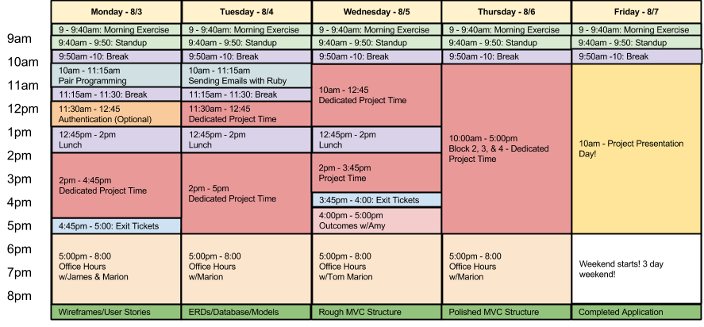

- Introduction & Syllabus
- 1. Front End Fundamentals
- 2. Object-Oriented Javascript
- 3. Project #1
- 4. Ruby
- 5. Full Stack Sinatra
- 6. Project #2
- 7. Ruby on Rails
- 8. Backbone.js
- 9. Project #3
- 10. Node and Express.js
- 11. Angular.js
- 12. Portfolio Project
- Published with GitBook
Week 6: Full Stack Project
| James | Tom | Angie |
|---|---|---|
| David | Jim | Sonju |
| Dylan | Chris | Kate |
| Brad | Isaac | Joe |
| Tim | Tristan | Matt |
| Myron | Eric |
 Project #2: Building Your First Full-stack Application
Project #2: Building Your First Full-stack Application

Overview
This second project is your first foray into building a full-stack application. You'll be building a Sinatra app, which means you'll learn about what it takes to build a functional application from the ground up yourself.
This is exciting! It's a lot, but you have the tools to build what you need, and you get to decide what you do with it. And you get to be creative in choosing what sort of application you want to build!
You will be working in pairs for this project, and you'll be designing the app together. We hope you'll exercise creativity on this project, sketch some wireframes before you start, and write user stories to define what your users will want to do with the app. Make sure you have time to run these ideas by your instructors to get their feedback before you dive too deep into code! Remember to keep things small and focus on mastering the fundamentals – scope creep/feature creep is the biggest pitfall for any project!
Technical Requirements
Your app must:
- Have at least 2 models (more if they make sense) – one representing someone using your application, and one that represents the main functional idea for your app
- Include sign up/log in functionality, with encrypted passwords & an authorization flow
- Have solid models, views, and controllers and utilize GET and POST routes.
- Utilize an ORM to create a database table structure and interact with your relationally-stored data
- Include wireframes that you designed during the planning process
- Have semantically clean HTML and CSS
- Bonus: Be deployed online and accessible to the public
Necessary Deliverables
- A working full-stack application, built by you
- A git repository hosted on Github and frequent commits dating back to the very beginning of the project. Commit early, commit often.
- A
readme.mdfile with explanations of the technologies used, the approach taken, installation instructions, unsolved problems, etc. - Wireframes of your app, hosted somewhere & linked in your readme
- A link in your
readme.mdto the publically-accessible user stories you created
Suggested Ways to Get Started
- Begin with the end in mind. Know where you want to go by planning with wireframes & user stories, so you don't waste time building things you don't need
- Don’t hesitate to write throwaway code to solve short term problems
- Read the docs for whatever technologies you use. Most of the time, there is a tutorial that you can follow, but not always, and learning to read documentation is crucial to your success as a developer
- Commit early, commit often. Don’t be afraid to break something because you can always go back in time to a previous version.
- User stories define what a specific type of user wants to accomplish with your application. It's tempting to just make them todo lists for what needs to get done, but if you keep them small & focused on what a user cares about from their perspective, it'll help you know what ot build
- Write pseudocode before you write actual code. Thinking through the logic of something helps.
Potential Project Ideas
Cheerups
The world is a depressing place.
Your task is to create an app that will allow people to create and share "cheerups" - happy little quips to brighten other peoples' days. Cheerups will be small - limited to 139 characters. Members will be able to promote Cheerups that they like and maybe even boost the reputation of the Cheerupper.
Bookmarket
You will create an application where users can bookmark links they want to keep.
But what if users could trade bookmarks for other bookmarks? Or sell bookmarks for points? Or send bookmarks to your friends. Or something even crazier.
Photo sharing app
Users will be able to register and create albums and photos. Albums and photos will need to be named and described by their owners. Users will be able to view other users' albums. Maybe users can comment on photos, or either up/down vote them.
Useful Resources
- Writing Good User Stories (for a few user story tips)
- Presenting Information Architecture (for more insight into wireframing)
Project Feedback + Evaluation
Project Workflow: Did you complete the user stories, wireframes, task tracking, and/or ERDs, as specified above? Did you use source control as expected for the phase of the program you’re in (detailed above)?
Technical Requirements: Did you deliver a project that met all the technical requirements? Given what the class has covered so far, did you build something that was reasonably complex?
Creativity: Did you added a personal spin or creative element into your project submission? Did you deliver something of value to the end user (not just a login button and an index page)?
Code Quality: Did you follow code style guidance and best practices covered in class, such as spacing, modularity, and semantic naming? Did you comment your code as your instructors as we have in class?
Problem Solving: Are you able to defend why you implemented your solution in a certain way? Can you demonstrated that you thought through alternative implementations? (Note that this part of your feedback evaluation will take place during your one-on-one code review with your instructors, after you've completed the project.)
Total: Your instructors will give you a total score on your project between:
| Score | Expectations |
|---|---|
| 0 | Does not meet expectations. |
| 1 | Meets expectactions, good job! |
| 2 | Exceeds expectations, you wonderful creature, you! |
This will serve as a helpful overall gauge of whether you met the project goals, but the more important scores are the individual ones above, which can help you identify where to focus your efforts for the next project!